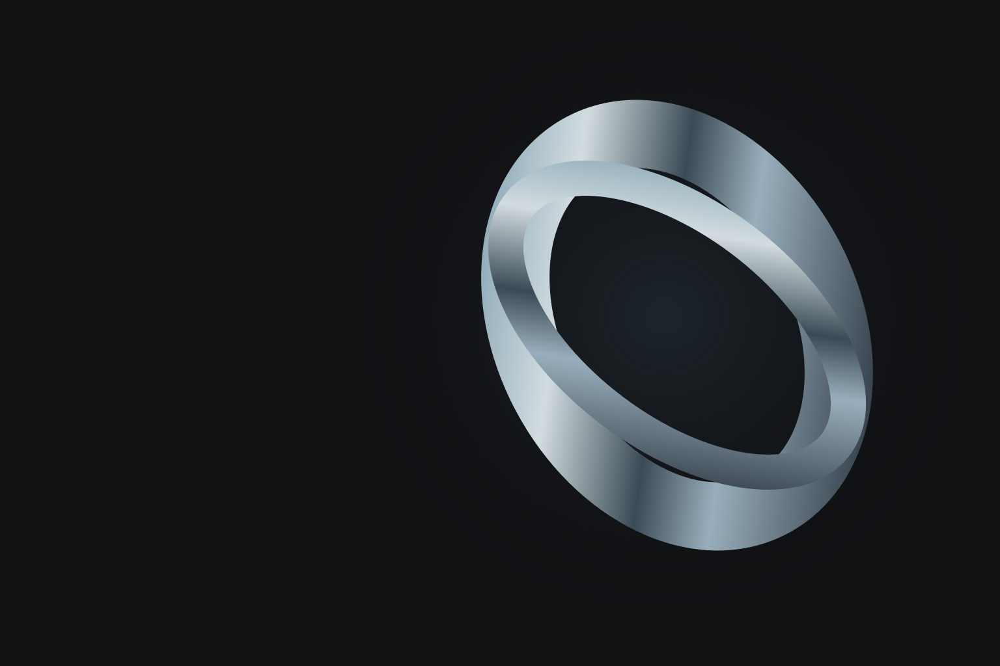

Java
Linguagem

Estudante de Engenharia de Software & Desenvolvedor Full Stack
Transformo curiosidade em código. Desenvolvo minha base em engenharia de software com projetos práticos, aplicações web e inteligência artificial.
Sou João Vitor, estudante de Engenharia de Software na PUC-Campinas. Tenho interesse em desenvolvimento full stack e em conectar interfaces, lógica e dados para construir aplicações úteis.
Atualmente curso Engenharia de Software na PUC-Campinas e desenvolvo projetos acadêmicos e pessoais, incluindo análise de documentos com inteligência artificial. Busco uma oportunidade para crescer, colaborar e contribuir com uma equipe.
Linguagem
Linguagem
Linguagem
Front-end
Back-end
Back-end
Banco de dados
Versionamento
Contêineres
Marcação
Estilos
Aprofundando minha base em desenvolvimento full stack e explorando integração de IA, processamento de documentos e visualização de dados por meio de projetos práticos.
Visualização ilustrativa do fluxo
Aplicação em Python que extrai informações de contratos em PDF, utiliza IA para identificar riscos e apresenta a análise em um dashboard interativo.
Minha experiência vem de trabalhos acadêmicos e projetos pessoais. No rh-auto, exploro a integração de IA com processamento de PDFs e dashboards. Busco aplicar esse aprendizado em uma oportunidade de estágio ou desenvolvimento júnior.
PUC-Campinas
Curso realizado na PUC-Campinas.
Curso realizado na PUC-Campinas.
Curso realizado na PUC-Campinas.
Sua equipe procura um desenvolvedor com vontade de aprender? Vamos conversar sobre oportunidades de estágio ou desenvolvimento júnior e como posso contribuir.